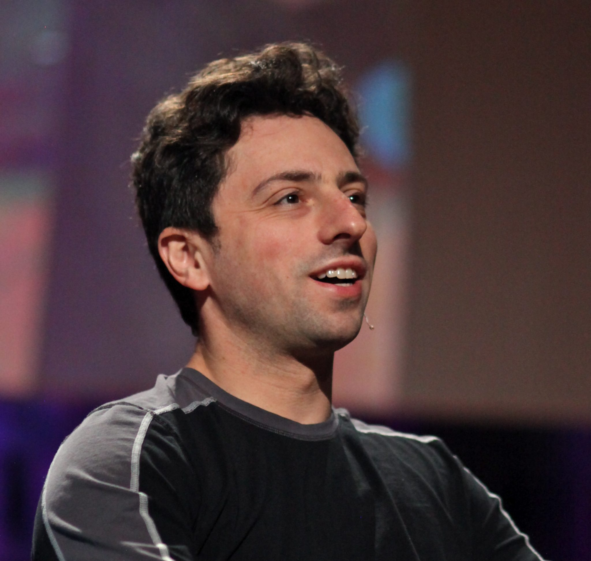

- by Ean and Alejandro
|  | |
| Quick Facts | |
|---|---|
| Born | |
| August 21, 1973 | |
| Occupation | |
| Inventor, Computer Programmer, Engineer | |
| Education | |
| University of Maryland, Stanford University | |
| Title | |
| President of Alphabet Inc. | |
| Place of Birth | |
| Moscow, Russia | |
| Full Name | |
| Sergey Mikhaylovich Brin | |
| Net Worth | |
| $52.2 billion | |
| Zodiac Sign | |
| Leo |
Sergey Brin was born on August 21, 1973, in Moscow, Russia. His parents named Yevgenia (Eugenia) and Mikhail (Michael) Brin, both graduated from Moscow State University. His mother is a researcher at NASA’s Goddard Space Flight Center, and his father is a mathematics professor at the University of Maryland. At a young age Sergey and his parents emigrated to the states, but before they did that they had to had to apply for an exit visa. Both his father and mother lost their job and without any money flowing in for the next 8 months they had to take care of Sergey. In the meantime his father taught himself computer programming. After time passed they were granted their exit visas and later the whole family left the country to go the America. As of today Sergey looks back to hard it must’ve been for their parents to leave their home country due to the Cold War that was present in that time.
Sergey attended elementary school for a short time till his father gave started teaching him at home. While being home schooled his family helped him retain his Russian language and encouraged him to learn mathematics. Sergey also completed high school, and after he enrolled in the University of Maryland gaining his Bachelor of Science from the Department of Computer Science at the age of 19. Sergey continued his study at Stanford University to further his education in computer science.
Upon meeting his best buddy Larry and going on to this day, he met him in a orientation for new students at Stanford. Once they familiarize themselves with each other they started implementing ideas of their own and merged them together for a research paper, both Sergey and Larry came up with the name "The Anatomy of a Large-Scale Hypertextual Web Search Engine." Sergey and Larry developed the PageRank Algorithm, and realized that it could be used to build a search engine. They both needed more computing power to run the whole thing so the turned their dorm into a office and programming center, and once its growth was overwhelmed Stanford’s computing infrastructure was experiencing problems. At the time they had a basic HTML website that wasn’t too appealing, then after sometime they put the initial version of Google to users online. Soon to be billionaires as Google developed into the most known search engine.